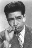

Also known as:椿三十郎 (original title)
Country:Japan, 96 minutes
Spoken languages:
Genres:Drama, Action, Comedy
Director(s):Akira Kurosawa
Writer(s):Akira Kurosawa, Hideo Oguni, Ryûzô Kikushima, Shûgorô Yamamoto
Video Codec:Unknown
Number: 2057


Certification:NR
Storyline:
Toshiro Mifune swaggers and snarls to brilliant comic effect in Kurosawa's tightly paced, beautifully composed "Sanjuro." In this companion piece and sequel to "Yojimbo," jaded samurai Sanjuro helps an idealistic group of young warriors weed out their clan's evil influences, and in the process turns their image of a proper samurai on its ear.
Cast: 


Medium: Original DVD,
Comments: w/ Yojimbo
Loaned: No
Aspect ratio: Unknown